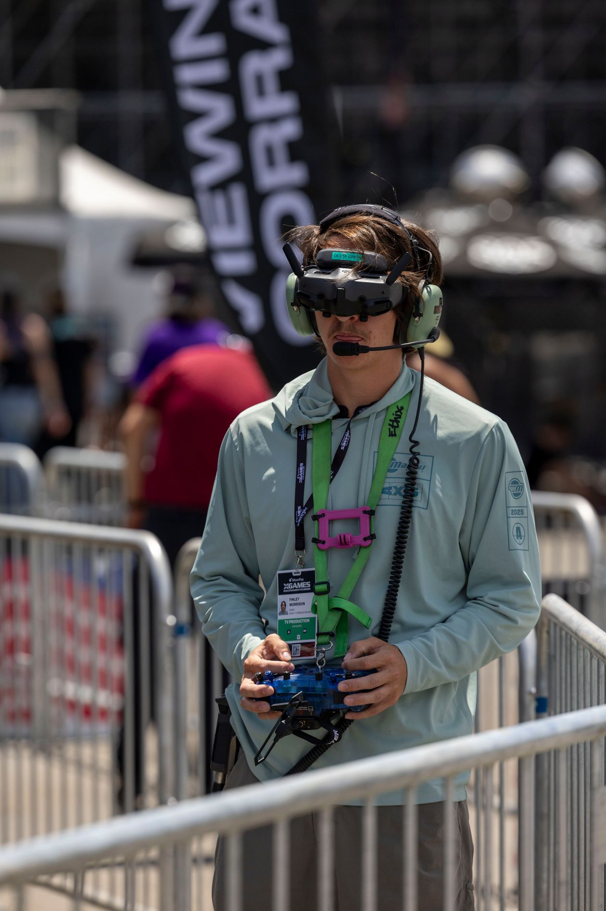
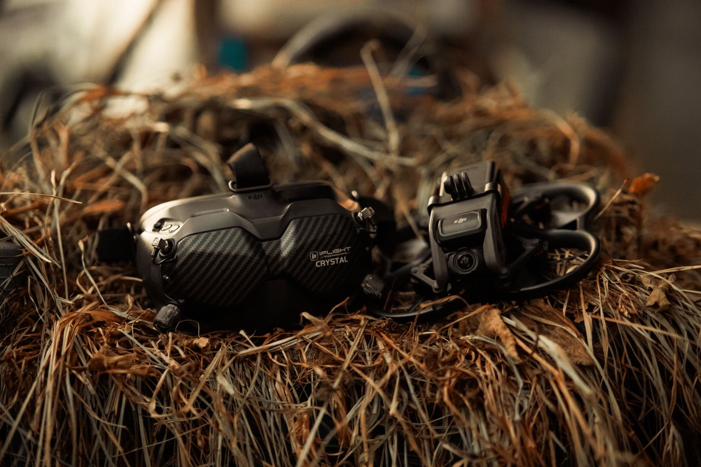
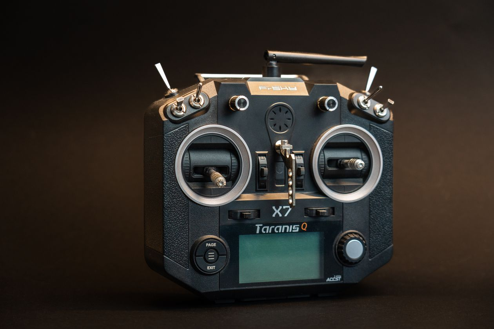

The pilot
My first quad was a toy that cost less than a set of race props do now, and it lasted eleven days. The lesson arrived early and has never left: in this sport you don’t rise to the level of your best lap, you fall to the level of your preparation. Everything since — the sheets, the pack logs, the reserves — is that sentence with paperwork.
I started racing club gates in 2021, took my first league podium in 2023, and won the Alpine Rotor League in 2025, in the last main of the season, by four points. The coaching started the way it usually does: a club junior asked why she was slow, I looked at her DVR instead of her quad, and the answer was on the screen, not in the parts bin. The film work came from a hotel manager who had watched a freestyle clip and asked the only question that matters — “could you do that in one take, through my lobby?”
Racing, coaching and film are three trades that happen to share a radio. This site prices them separately, counts them separately, and never lets one borrow the other’s evidence.

How the days run
The method, at practice levelA race day
- Tech check first. Every quad is checked before it is armed — props, failsafe, video channel, frame damage from the last crash. A quad that fails tech doesn’t fly, whoever owns it.
- The spotter is not optional. Every flight, practice included, is flown with a spotter watching the airspace the goggles can’t see.
- Packs are numbered and logged. Each pack carries a number; cycles, crashes and resting voltage go in the log. A pack is retired at 120 cycles or its first puff — the count is on the home page scoreboard.
- DVR before the next heat. The previous heat is reviewed before the next one is flown. Racing from memory is how the same gate gets clipped twice.
A coaching day
- One change at a time. A day works on one thing — a line, a braking point, a throttle habit. Five changes is no change; nobody can tell which one worked.
- Line before throttle. New lines are learned at 70% throttle until they are automatic. Speed is added to a line that already exists, never used to search for one.
- The sheet is the homework. Every day ends with best laps written down and one drill assigned. Progress is a column of numbers falling, or it isn’t progress.
- Parts last. Setup and equipment are examined after the flying is. Most slow laps are flown, not built.

The honesty page
Four things this site refuses to doH.1 — The reel is the 4% that didn’t crash
A freestyle reel is what is left after the cutting-room floor takes the rest. For every minute of flowing footage there is a crashed quad, a dead pack or a line that didn’t work. That is normal — flying at objects is like that — but a reel presented as a typical day is a lie of proportion, so this site publishes the crash budget next to the podiums: 23 packs retired, 9 frames broken, 2025.
H.2 — An empty-course lap is not a race lap
Every pilot is faster alone. A qualifying time set on an empty track, with nobody else’s video in your goggles and nobody diving on your line, proves the quad works — it does not prove the pilot races. Results on this site are placings in flown heats, with the field present, or they are labelled practice and kept off the scoreboard.
H.3 — Racing money ≠ film money
A league title does not make a film day worth more, and a brand film does not make a racer faster. The two trades share a radio and nothing else — different risks, different deliverables, different day rates, printed separately on Lap 01. Anyone who prices your wedding film off their trophy shelf is selling you the shelf.
H.4 — If it isn’t on a sheet, it didn’t happen
“Champion” is a word this site uses once, about one season, with the final sheet printed on Lap 02. Everything else is a placing, a lap time or a count — because those can be checked. If you are comparing pilots, ask each of us for the sheet. The ones who hesitate are telling you something.
Conditions & terms
Printed here, not in fine printThe flying conditions — every flight, every client
- Registered quads, identified pilot. Everything flown for work is registered and carries the operator ID the rules require; my own registration and insurance are shown at booking, not on request.
- Permission for the site, in advance. Landowner or organiser permission is confirmed before the day, in writing for film and event work. No permission, no flight — the day rebooks or refunds.
- A spotter on every flight. FPV is flown with a dedicated spotter maintaining visual line of sight. This is a condition of the work, not an upgrade.
- No overflight of people, crowds or roads. Routes are planned around it; a route that can’t be is a route that isn’t flown.
- Weather limits agreed in writing. Film days carry a stated wind limit set before day 1. Above it, the day scrubs — once free, as File 03 shows.
Engagement terms
- Booking. A day is held on a 30% deposit against the printed rates; the balance is due on the day. Multi-day blocks are priced per day from the same table.
- Cancellation. More than 14 days out: deposit returned. Inside 14 days: deposit held against a rebooked date within the season.
- Travel. Travel days are charged at the printed €200 only when the day is spent travelling; fuel and tolls at cost, overnights at cost, receipts provided.
- Footage. Film clients receive the full take log — including the rejected takes and the scrub record. What you do with the honest version is your business; you will have it.
